Tipos de cambio
Dólar MEP, CCL y canje, con AL30 de referencia. El canje es (CCL / MEP − 1) y se muestra en porcentaje. Bid, ask y último son de hoy y vienen con demora. El cierre es el del día hábil anterior y no cambia durante la rueda.
Cargando…
Último operado con demora (Data912, caché de unas 2 horas).

Dólar MEP, CCL y canje, con AL30 de referencia. El canje es (CCL / MEP − 1) y se muestra en porcentaje. Bid, ask y último son de hoy y vienen con demora. El cierre es el del día hábil anterior y no cambia durante la rueda.